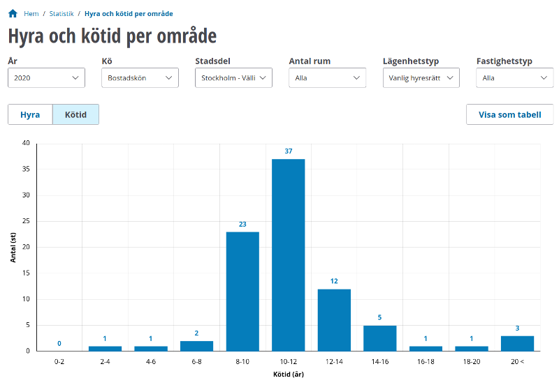

Generated by myself based on a dataset released on the Stockholm data portal.
I have released the resulting geojson files into public domain (CC0) at https://github.com/krasch/stockholm-stadsdelar. That repository also contains additional documentation about the geodata.
All the data displayed on the map comes from the statistics page of Stockholms Bostadsförmedling.
The statistics page also allows you to filter apartments based on different criteria:
You might observe that the waiting times and number of apartments shown by hyreskartan slightly differ from the ones shown on the official site. This is due to small differences in the aggregation of the data, which are detailed below.
| Affected apartments |
154 apartments with 1.5 rooms 054 apartments with 2.5 rooms 014 apartments with 3.5 rooms 008 apartments with 4.5 rooms |
|
|---|---|---|
| Official site | When you select "Antal rum=2", only apartments with exactly two rooms are returned. Apartments
with 1.5 or 2.5 rooms are not included. Same for all the other room sizes. The only way to see apartments with e.g. 1.5 rooms is to select "Antal rum=Alla". |
|
| Hyreskartan | The number of rooms is rounded down, i.e. 1.5 room apartments are grouped together with 1 room apartments, etc. |
| Affected apartments | 1 apartment with 8 rooms | |
|---|---|---|
| Official site | This apartment is not returned when you select "Antal rum = 5+". | |
| Hyreskartan | The apartment is included when you select "5+" rooms. |
| Affected apartments |
664 apartments that are marked as "Ungdom" 600 apartments that are marked as "Ungdom korttid" |
|
|---|---|---|
| Official site | There is no way to select "Ungdom". If you select "Korttid", then apartments marked as "Ungdom korttid" are not included. | |
| Hyreskartan | There is a checkbox for "Ungdom". Check both "Ungdom" and "Inkludera korttid" to see also "Ungdom korttid" apartments. |
| Affected apartments |
17 apartments marked as "Kollektivhus" 01 apartment marked as "Radhus" 01 apartment marked as "Tillgänglighetsanpassad" |
|
|---|---|---|
| Official site | There is no specific filter for these apartments, you will only see them if you select "Lägenhetstyp=Alla" | |
| Hyreskartan | These apartments are grouped with "Vanlig hyresrätt" (which is, to be honest, a bit of a stretch for the "Kollektivhus" ones..) |
| Affected apartments | 28 apartments | |
|---|---|---|
| Official site | These apartments either don't show up when selecting "Endast nyproduktion", despite them being tagged as "nyproduktion" in the full apartment ad (annonsen). Or they don't show up when selecting "Utan nyproduktion", despite them not being tagged as "nyproduktion" in the apartment ad. In the latter case, these apartments are often tagged as "nyrenoverade" | |
| Hyreskartan | "Nyproduktion" / "Not nyproduktion" for these apartments is based on the tags in the apartment ad. "nyrenoverade" is grouped with "Not nyproduktion". |
| Affected apartments | All | |
|---|---|---|
| Official site | The waiting times are given as two-year wide intervals, e.g. if you have waited 3.5 years, you would fall into the [2-4] years interval. Apartments with 20+ years waiting times are combined into a ">20" group. | |
| Hyreskartan | The waiting times are rounded up to the nearest year. Apartments with 20+ years are not grouped together.
(Reason for rounding up: being conservative when showing results on the map. If the person who got the apartment waited 4.2 years, you should only see the apartment when you pick a waiting time >= 5 years) |